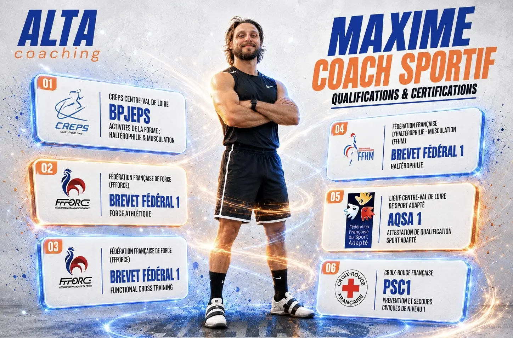

PARTIR DE VOTRE
POINT DE DÉPART.
Comprendre votre niveau, vos objectifs, vos habitudes, vos contraintes et ce que vous voulez réellement faire évoluer.
COACHING SPORTIF PERSONNALISÉ
Musculation, running et préparation physique. Un programme personnalisé, un suivi humain et des ajustements selon votre progression.
Quelques minutes · Sans engagement · Réponse personnalisée

01 / LA MÉTHODE
Comprendre votre niveau, vos objectifs, vos habitudes, vos contraintes et ce que vous voulez réellement faire évoluer.
Construire un programme adapté à votre réalité plutôt qu’un modèle générique à suivre coûte que coûte.
Faire évoluer l’entraînement selon votre progression, vos retours et votre quotidien.
PRÊT À DÉFINIR VOTRE POINT DE DÉPART ?
02 / DOMAINES DE COACHING
Force, technique et développement musculaire avec une programmation structurée.
Bénéfice principal · progresser avec plus de précision et d’autonomie.Une progression qui coordonne séances, récupération et continuité.
Bénéfice principal · savoir où aller sans empiler les kilomètres.Développer les qualités utiles à votre pratique et à votre objectif.
Bénéfice principal · donner un rôle précis à chaque travail complémentaire.03 / FORMULES
AUTONOMIE GUIDÉE
80 € / mois
Pour une personne autonome qui veut une programmation personnalisée.
Sans engagement
LE PLUS ÉQUILIBRÉ
SUIVI RÉGULIER
120 € / mois
Pour ajuster le programme et faire un bilan lors d’une séance mensuelle.
Sans engagement
ACCOMPAGNEMENT COMPLET
200 € / mois
Pour un accompagnement complet avec une séance chaque semaine.
Sans engagement
| Accompagnement | Programme | Essentielle | Performance |
|---|---|---|---|
| Programme personnalisé | ✓ | ✓ | ✓ |
| Messagerie | ✓ | ✓ | ✓ |
| Ajustements réguliers | — | ✓ | ✓ |
| Séances | — | 1 / mois | 4 / mois |
| Bilan de progression | — | ✓ | ✓ |
À LA CARTE
04 / MAXIME
COACH SPORTIF · FONDATEUR D’ALTA COACHING
« Mon rôle n’est pas de vous faire entrer dans une méthode toute faite. »
Je construis avec vous une manière de vous entraîner qui corresponde à vos objectifs, votre niveau et votre quotidien. La technique, la progressivité et la qualité de l’échange structurent chaque accompagnement.
QUALIFICATIONS
BPJEPS Activités de la Forme, force athlétique, functional training, haltérophilie, sport adapté et prévention des risques.

05 / FAIRE MON BILAN
Présentez votre niveau, vos contraintes et ce que vous souhaitez faire évoluer. Ce bilan est le point de départ du programme personnalisé.
Sans engagement · Réponse personnalisée
06 / PRENDRE RENDEZ-VOUS
15 MINUTES
Choisissez un créneau et présentez simplement votre objectif.
07 / CONTACT
08 / FAQ
À toute personne qui souhaite structurer sa pratique avec un accompagnement adapté à son niveau et à son objectif.
Non. Le programme part de votre niveau réel, y compris pour une reprise progressive.
Oui. Il prend en compte vos objectifs, contraintes, disponibilités et retours.
Il varie selon la formule : messagerie, ajustements, bilans et séances individuelles.
Oui, les trois formules mensuelles présentées sont sans engagement.